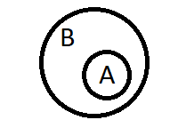
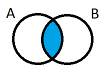
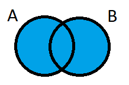
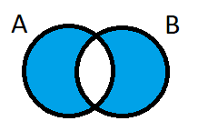
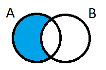
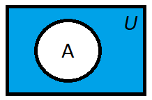

Mengder
Mengde:
Uordnet samling av objekter/elementer.
Kjente mengder:
- De naturlige tallene
ℕ = { 0, 1, 2, ... } -
De hele tallene
ℤ = { ..., -1, 0, 1, ... }
inkluderer ℕ. -
De rasjonale tallene
ℚ = Hele tall og brøker der teller og nevner er hele tall.
inkluderer ℤ. -
De reelle tallene
ℝ = Alle tall på tallinja.
inkluderer ℚ.
Symboler i mengdelære:
-
Delmengde (⊂):
A ⊂ B leses som mengde A ligger innenfor mengde B.
Venndiagram: -
Delmengde av
eller lik (⊆):
A ⊆ B leses som mengde A ligger innenfor mengde B eller er lik B. -
Den tomme mengden (∅):
A = { } leses som mengde A inneholder ingen elementer. -
Snitt (∩):
A ∩ B leses som mengden av elementene som A og B har til felles.
Venndiagram: -
Union (∪):
A ∪ B leses som mengden av elementene som er i A eller B, eller i begge.
Venndiagram: -
Eksklusiv union (⊕):
A ⊕ B leses som mengden av elementene som er i A eller B som ikke overlapper hverandre.
Venndiagram: -
Differanse (−):
A − B leses som mengden av elementene som er i A men ikke i B.
Venndiagram: -
Komplement (A):
A leses som mengden av elementene som er i universalmengden U, men ikke i A.
Venndiagram:
Kartesisk produkt:
(a,b): førstekoordinat er fra A og andrekoordinat er fra B.
For eksempel la A = { a1, a2 } og
B = { b1, b2 }. Da er A × B =
{ (a1,b1), (a1,b2),
(a2,b1), (a2,b2) }
Kardinalitet: Størrelsen til en mengde. Antall forskjellige elementer i mengden. Skrives: |A|
Potensmengde: Potensmengden til A, P(A), er mengden som inneholder alle delmengder av A. Formel: |P(A)| = 2|A|
Formler for kardinalitet:
- |A ∪ B| =
|A| + |B| - |A ∩ B| - |A ∪ B ∪ C| =
|A| + |B| + |C| - |A ∩ B| - |A ∩ C| - |B ∩ C|
+ |A ∩ B ∩ C| - |A − B| = |A| - |A ∩ B|
- |A ⊕ B| =
|A − B| + |B − A| =
|A| + |B| - 2|A ∩ B|
De Morgan's lover:
- A ∪ B = A ∩ A
- A ∩ B = A ∪ A
Distributive lover:
- A ∩ (B ∪ C) =
(A ∩ B) ∪ (A ∩ C) - A ∪ (B ∩ C) =
(A ∪ B) ∩ (A ∪ C)
Assosiative lover:
- A ∩ (B ∩ C) =
(A ∩ B) ∩ C =
A ∩ B ∩ C - A ∪ (B ∪ C) =
(A ∪ B) ∪ C =
A ∪ B ∪ C